Portfolio and Investment Management Reimagined
I led the redesign of Savvy Wealth's portfolio and investment experience so an advisor can see and act on a household's holdings, trades, and money movement in one place, on live data, without leaving the platform.
Savvy was becoming the brokerage, not just the software around one
For its first years Savvy was a workflow layer wrapped around someone else's brokerage. Advisors could see a household's investments as a two-day-old Orion* snapshot. The moment they needed to trade or move money, they left for Wealthscape or Schwab. ECI, Enhanced Custodian Integration, changed that: Savvy became a FINRA-registered introducing broker-dealer clearing through Fidelity NFS, with Fidelity's APIs integrated directly into the platform. The business case was margin and vertical integration, owning the economics and the experience instead of renting both.
That made the portfolio a design problem. A read-only page fed by a stale snapshot was fine as a tab between custodian sessions. It was not fine as the only place an advisor could look. If advisors were going to stop logging into custodians, every loose end they had been tying off there needed a real home in Savvy.
* Orion is a third-party service that copies account data out of the custodians once a day and hands Savvy a report, so what advisors saw was yesterday's snapshot rather than the live account.
Two logins, two tabs. Everything that touches money happens on the right. Savvy only ever sees a stale copy of it.
One login. Live data flows up, actions flow down. Advisors and clients never see Wealthscape.
Before ECI, the money lived at the custodian. Account data took a day to reach Orion and another day to reach Savvy, so advisors worked from a two-day-old snapshot. With ECI, Savvy is the only surface an advisor or client needs to touch. Live data flows up and actions flow down through Fidelity's APIs, which Savvy can access directly as the broker-dealer.
Before and after ECI
The honest picture was that Savvy didn't own the surfaces where the work happened. All we had on the investment side was delayed holdings and performance data fed through an Orion integration — a snapshot, roughly two days stale. We lacked automation and immediate execution of money movement tasks and clearing trades. For anything that touched the money itself, advisors had a habit of logging directly into the custodian to avoid any delays. That is what turned ECI from a back-end initiative into a design problem. If advisors were going to stop relying on Wealthscape and Schwab logins, every loose end they had been quietly tying off on a custodian site — checking a live balance, placing a trade, moving cash, confirming which accounts were on a managed model — needed a real home in Savvy. A read-only portfolio page fed by a two-day-old snapshot was fine as a tab between custodian sessions. It was not fine as the only place an advisor could look.
Six of ECI's twelve brokerage primitives. The four tagged ones become visible on this page; account opening and transfer of assets live in the separate Fidelity NFS advisor transfer flow. Compliance and supervision moved too: BD supervision under a named principal and trade review queues shaped what an advisor can do directly versus through review.
"If a routine task sends an advisor or client into Wealthscape, that surface has failed and is on the roadmap."
— ECI north-star test, internal product visionThree pages, actions that wait on ops, and the details that matter buried too deep
An advisor's view of a household was spread across Net worth, Managed investments, and Strategy, each with its own layout and its own definition of an account. Trades and money movement existed only as tasks to the ops team, who executed them by hand at the custodian. Most advisors made the same calculation: skip the task, log into the custodian, do it yourself.
To ground that picture, I ran five interviews with advisors walking through the current portfolio on their own households, looking for the gaps between what the page showed and what they actually needed to do. I recruited with an internal AI skill that selects interview candidates across a range of qualities, so the sample was deliberately mixed: tenured advisors and new ones, advisors with most of their book in SWIM models and advisors who prefer managing custom models. I also recruited our largest advisor group, the most tech-savvy on the platform, whose team splits the business across their own admin and operations staff. The four costs below, and the quotes under each, came out of those sessions.
The Managed investments page as it stood — a walk through the Allison & Frank Chan household. Note the "Refresh data" button and "Last updated" stamp under the value: the page knows its own data is stale.
No single source of truth
Three pages, three layouts. An advisor prepping for a client meeting stitches the picture together in their head.
“Before a review I have Net worth open in one tab and Managed investments in another, and I'm adding them up on a notepad.”
Advisor, 1+ year on platform, $220M AUM
Deep on data, empty on action
Tax lots, cost basis, a full ledger. None of it connects to a trade or a transfer.
“To be honest, I didn't even know the dashboard showed lots. There's so many clicks, I'm confident I don't know everything you guys offer. If you do show lots, I need to be able to trade them. Just showing me lots isn't even helpful.”
Advisor, 1+ year on platform, $132M AUM
No proactive value
Unmanaged, cash-heavy, or concentrated money just sits there. Nothing points at the opportunity to move it onto a Savvy model.
“Nothing tells me a client has been sitting in cash for six months. It can cost me a client if they find out that I haven't managed idle cash. This is where I see the value of enrolling in SWIM models but I don't know how to get started. I need to see a proposal to present to my client.”
Advisor, 3 months on platform, $120M AUM
Stale by design
Every number is an Orion snapshot. Advisors learned not to trust the page for anything that touched money.
“If it says 'last updated two days ago,' I don't quote it to a client. I open the custodian.”
Advisor group, 1+ year on platform, $1.6B AUM
Same household, two pages that don't know about each other
Net worth and Managed investments are separate destinations under the same Portfolio tab. Both totals are useful — everything the household holds, and the slice Savvy manages — but they sit on different pages with different layouts, and nothing connects them. To see how the managed accounts roll up into the household, an advisor has to hold both pages in their head. Neither page has a way to act on any of the accounts it shows.
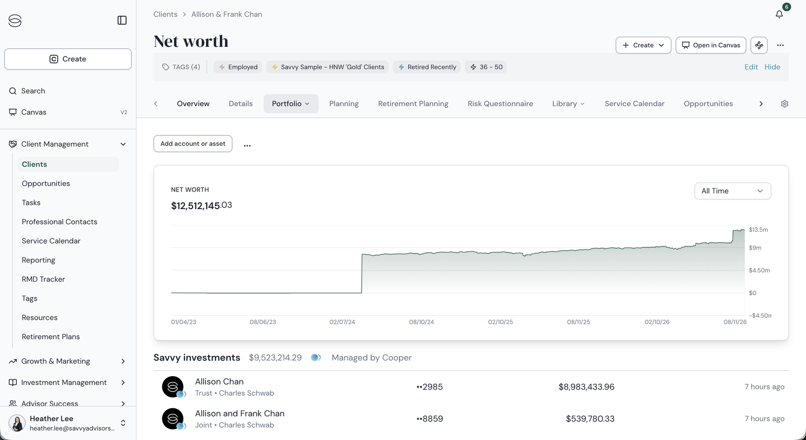
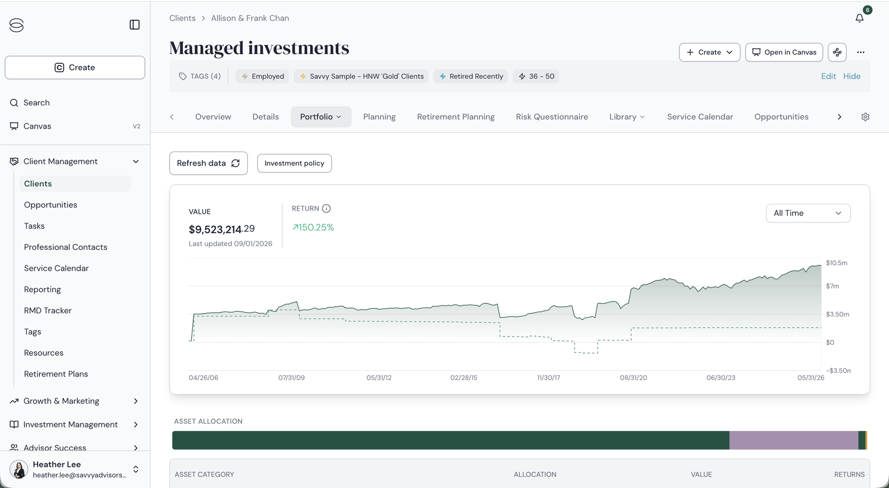
The same household, split across two pages. Net worth lists accounts by a masked number and custodian; Managed investments doesn't list accounts at all until you dig into a sub-tab. The redesign keeps both totals — it puts them on one page.
Deep on data, empty on action
Drill in and the detail is real: asset classes, positions, tax lots with cost basis and gain/loss type, a full transaction ledger. But none of it connects to an action. Trades and money movement did exist in Savvy, as tasks — but a task went to the ops team, who executed it by hand at the custodian, so every request carried a delay. Most advisors made the same calculation: skip the task, log into the custodian, and do it themselves. And nothing on the page ever suggested a model recommendation at all.
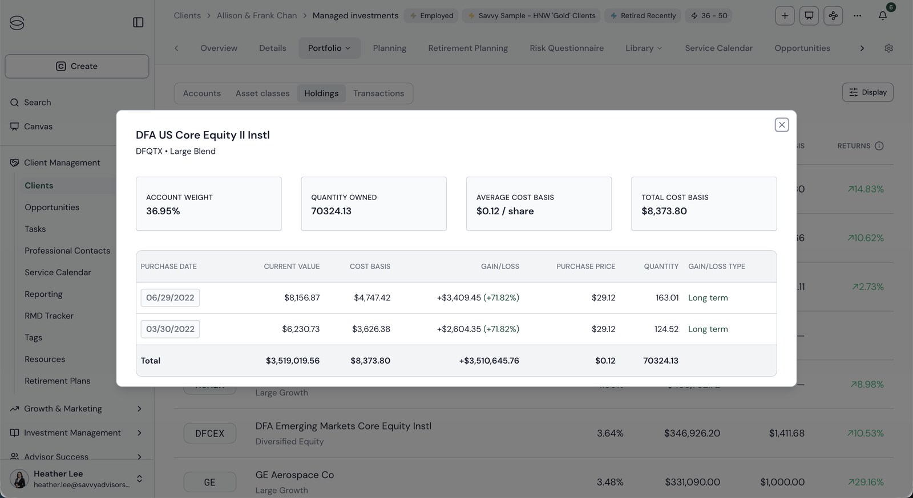
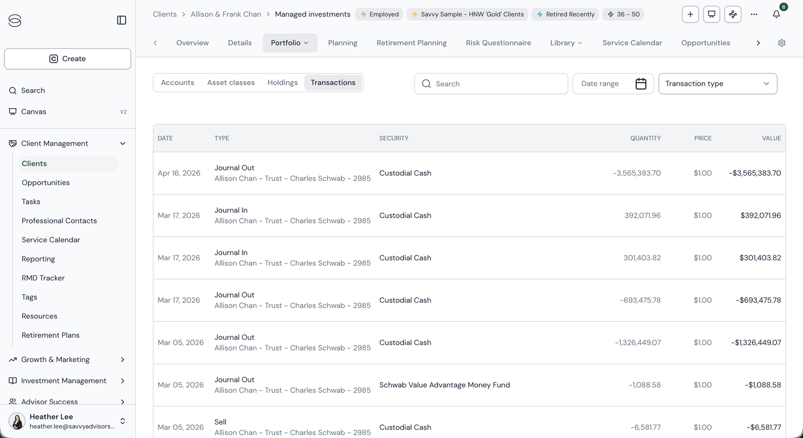
The holdings modal has everything an advisor would want to know before acting, and no way to act from it. In Transactions, the only handle on an account is a custodian name and the last four digits.
How might we redesign the household portfolio experience to reach parity with custodial platforms, replace the dated structures advisors have learned to dread with something modern and easy to use, proactively recommend Savvy managed models an advisor can act on, and raise the integrity of every account's data?
Pulling a competing OKR into scope
The brief was an ECI project: get the portfolio ready for accounts held at Savvy through Fidelity NFS. The company had a second OKR the same page could move, SWIM enrollment, tracked by a different team with no design attached. I scoped it in. That meant getting the ECI Product Manager to agree the page was shared ground with the SWIM team, and aligning on how two OKRs owned by two teams would be measured on one surface.
SWIM, Savvy Wealth Investment Management, is the in-house program where an advisor enrolls a client account into a managed strategy for a fee. It is the primary revenue lever for the investment business. ECI moves assets onto Savvy's custody; SWIM monetizes them once they're there. Both OKRs reduce to the same question an advisor asks while looking at a household: what should I do with this account? The portfolio page is the only place both answers can live. The case for pulling it in was sitting in the old product: unmanaged accounts sat in plain sight with nothing pointing at them.
One accounts list that serves both OKRs without sacrificing either
I made the first bet on the list itself, and I started with a model. I reduced the two OKRs to two questions about every account: is Savvy the custodian, and is it on a managed model? Put them on a grid and each account's position tells you what data it can show, how its trades execute, and whether there is anything to recommend.
Custody sets the data and how edits reach the custodian. Model status sets who trades: the advisor on unmanaged accounts, Savvy's investment team on managed ones. Top right is the cell that makes money: live accounts with no model yet.
New Accounts list view that supports every quadrant of the matrix
I decided to group accounts by custody, not by type or strategy, because a household mid-transition has accounts at both Fidelity NFS and Schwab and will for a while. Held at Savvy shows live data and day change on every row; Held elsewhere shows delayed data and says so. The same rules handle sleeves, one account split into a managed core and a self-directed remainder, and scope, the page rolled up to any subset of accounts.
Accounts not yet on ECI get a direct path to upgrade: a note on every Held elsewhere row and a button at the end of the group. I insisted it sit alongside the SWIM nudge, not replace it, so an unmanaged account held elsewhere still shows "Not enrolled in SWIM" and a request-a-review link. The page can move an account up the matrix and across it at once.
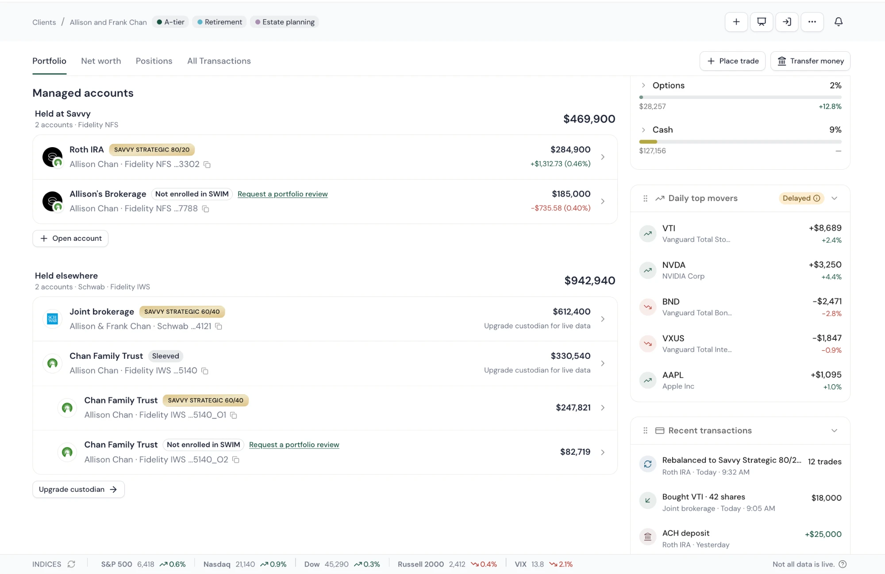
An unmanaged account is a recommendation waiting to happen
Bet 1 made the gap visible in the main accounts row, front and center on the portfolio page. Bet 2 turns that gap into a path. The old product offered a marketing paragraph and a generic button. The new one names a specific model and the reason for it, in the row the advisor is already reading, and gets from there to enrollment in four clicks without leaving the page.
The old enrollment paths
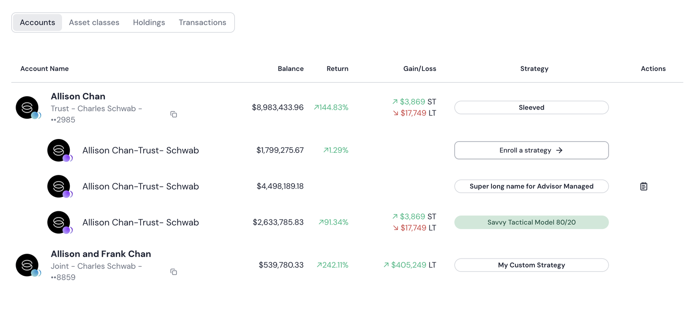
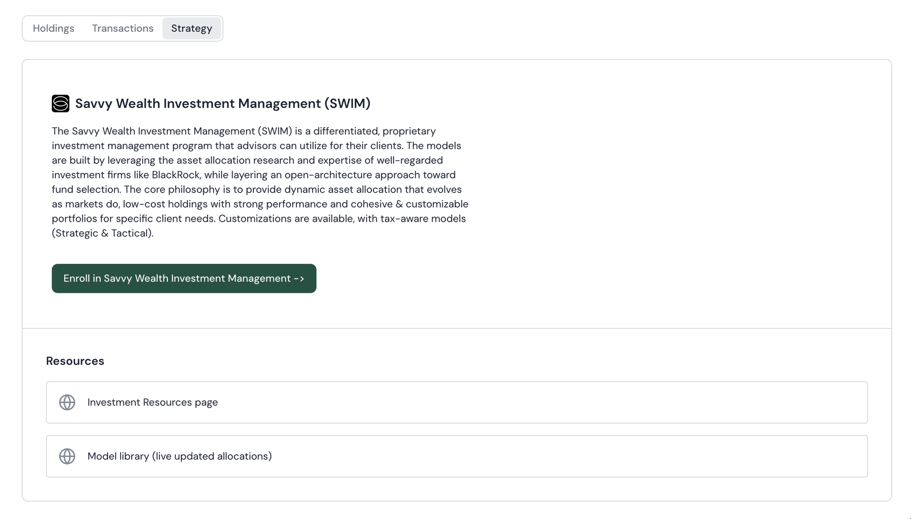
On the left, "Enroll a strategy" is styled like every other strategy name in the column. On the right, a marketing paragraph and one button — no account, no reason, no recommended model. This is the entry point to Savvy's biggest revenue driver.
The new enrollment path: four clicks from the row
The recommendation itself comes from Savvy Intelligence, our AI layer. To bring it to life I worked with the AI team and the internal investments team to define the mappings: logic that reads an account's holdings, cash position, and concentration and matches it to the closest Savvy SWIM model. The investments team owns which model a given profile should map to; the AI team owns how the match is made; the design owns how the answer shows up in the row, with the model named and the reason stated so an advisor can trust it before they act on it.
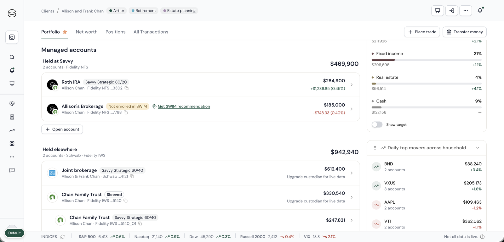
A "Not enrolled" chip and a recommendation link on the row, next to accounts that show their strategy.
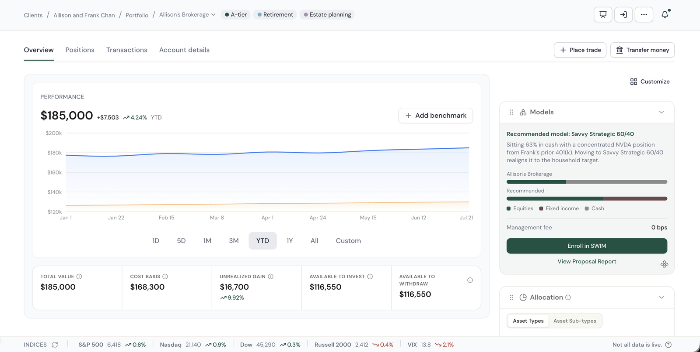
A named model, Savvy Strategic 60/40, and why: 63% cash and a concentrated NVDA position.
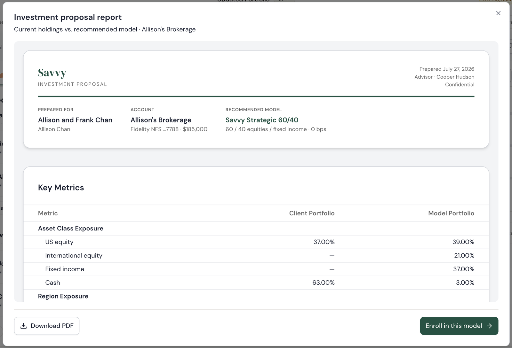
A client-ready proposal generated from the row, downloadable for the meeting.
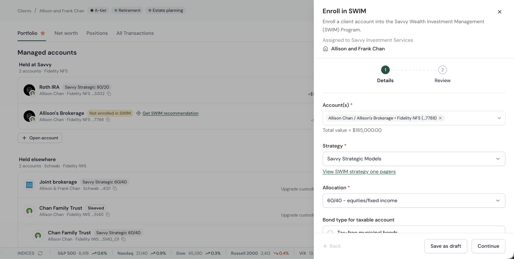
Account, strategy and allocation already filled in. Two steps, then it routes to Savvy Investment Services.
Every action lives where an advisor's mental model expects it, next to the account or position it applies to, and forks by custody without the advisor having to know which rule applies
A Trade button sits on every position. Transfer money sits in the header of every view. I designed one button that forks: for an account held at Savvy it executes directly through Fidelity's APIs, for an account held elsewhere it opens an Ops task instead. The advisor never has to hold that rule in their head, because the button already does.
The fork wasn't a design preference; it was mapped against what could actually execute. I worked with the engineering lead building the Fidelity integration to trace which actions the Order Entry and Money Movement endpoints could complete directly, and with the internal ops team to confirm which ones still needed principal review first. Wherever the API or the review queue said no, the same button routes to an Ops task instead of executing.
Trade and transfer, right where you need them
Positions consolidate across every account and expand to per-account lots, and a Trade button sits on every row. Transfer money sits in the header of every view and on every account, a docked three-step sheet for ACH, wire, check, or internal, with an optional trade step before review. The entry point is wherever the advisor is already looking, so the action never requires a trip to a different page, let alone a different platform.
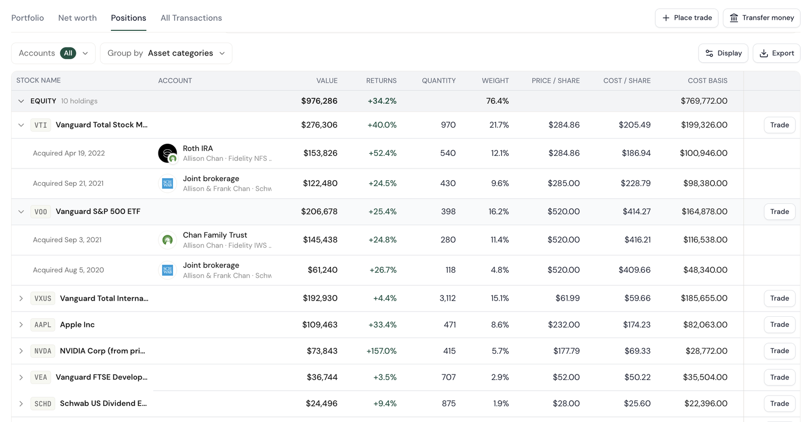
Positions grouped by asset category, expanded to per-account lots, with Trade on every row and Place trade and Transfer money in the header above.
Live market data, one click from the position
Click any position and it opens with a live quote: price, day change, previous close, open, today's range, the 52-week range, and a chart, with Buy and Sell one tap away. I pushed for the live quote to open from the position itself, because it closed another reason advisors kept a second tab open.
I always have Yahoo Finance open so I can see real-time market data on a ticker. There's so much the dashboard doesn't show that I feel more comfortable going directly into the custodian or using a public source for live market info.
Advisor, research interview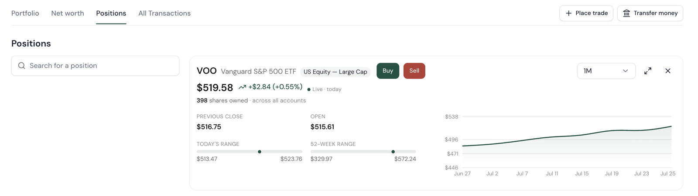
A position opened from the table: live price and day change, the ranges an advisor used to look up elsewhere, and the trade actions on the same card.
Beneficiaries, and the same button doing two different things
Beneficiaries are the clearest example of the fork. On an account held at Savvy, Edit opens a modal and the change is made in place: name, allocation, primary or contingent, saved straight through Fidelity's APIs. On an account held elsewhere, the same Edit button opens an Ops task instead, because the custodian still owns the record. The advisor clicks the same control in the same place either way and never has to know which path they're on.
Editing beneficiaries on two accounts in the same household. The account held at Savvy opens an edit modal and saves immediately; the account held elsewhere routes the same request to an Ops task.
The rest of the page, rebuilt on live data
The three bets carried the argument. I rebuilt the rest of the page around them, working view by view against the list of things advisors used to look up at the custodian, until nothing was missing.
Customizable right rail
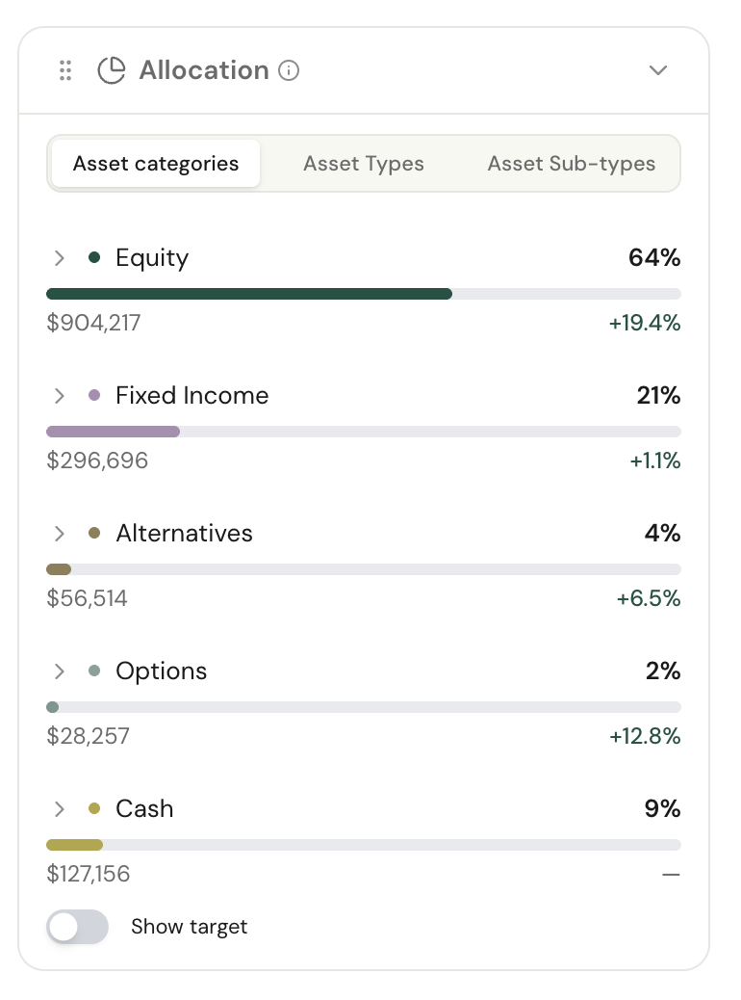
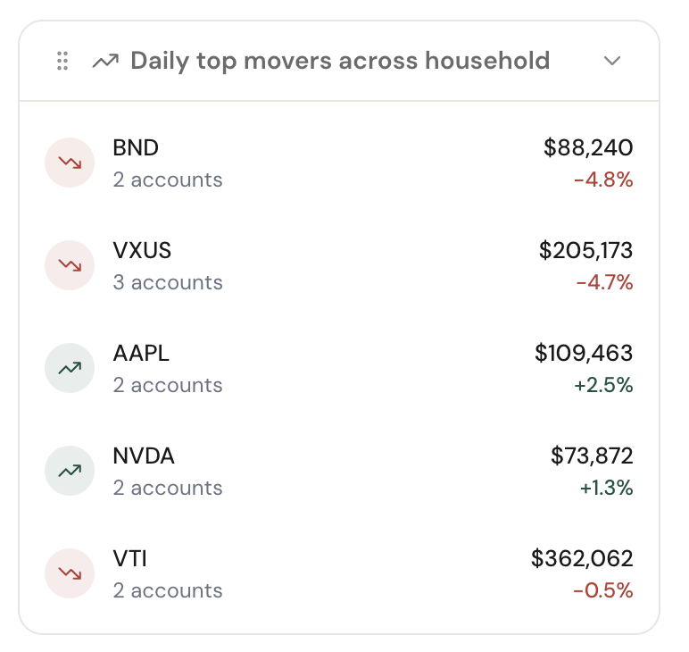
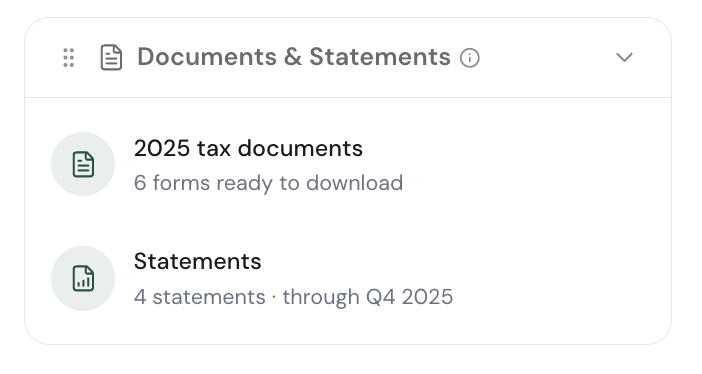
A customizable right rail: allocation, live top movers, in-app tax docs and statements.
Benchmarked performance
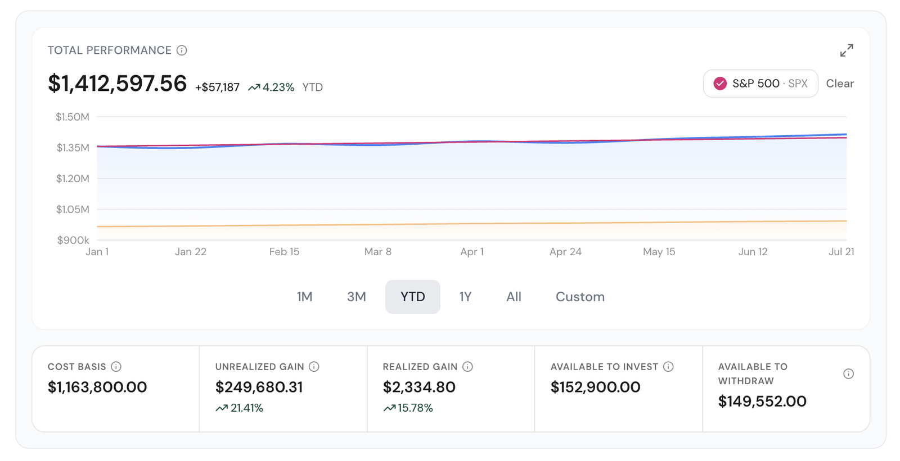
Benchmarked performance with intraday ranges only live accounts can offer.
Net worth and linked accounts
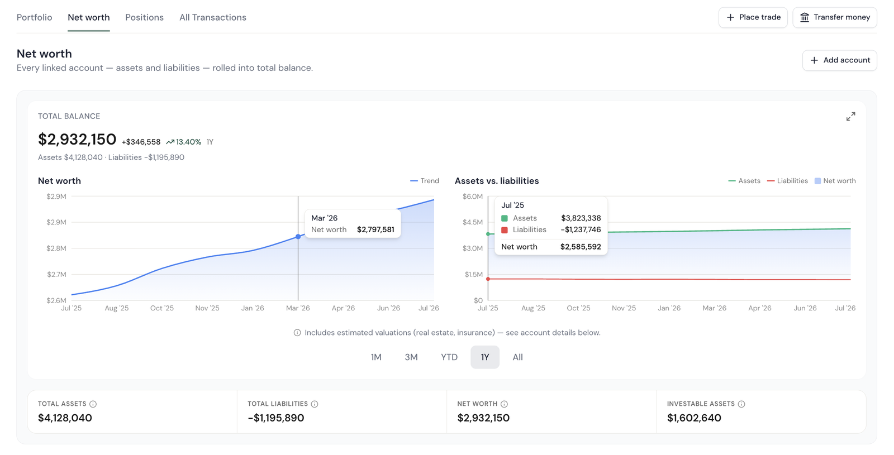
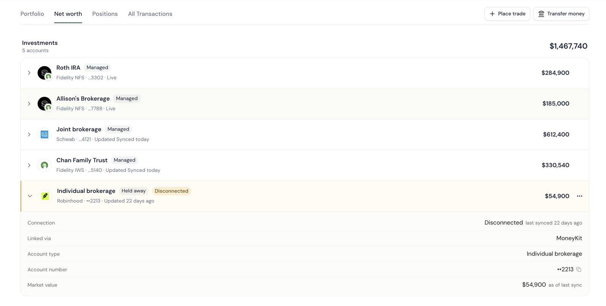
Net worth as its own view: assets split from liabilities, the trend charted, and investable assets broken out. Every linked account shows whether it's still connected. The Robinhood account is flagged Disconnected and dated to its last sync, so a three-week-old balance is never read as today's.
A prototype execs could click through, built in the production design system
I built the prototype in Savvy Kit, the production design system, so it read as a real cut of the product rather than a mockup. A scenario switcher seeded one Chan account in each quadrant, so every path in the model was demonstrable. Order execution, aggregation and ops routing were simulated and labelled as such, so no one mistook scaffolding for a requirement.
Building in the real system also exposed its gaps. I worked with our design engineer to agree on fixes and shipped new component variants, like a compact StatBlock, straight into Storybook rather than leaving forks in the prototype. Engineering then built from the prototype branch instead of a spec, and I reviewed the PRs against it directly, which moved faster than a Figma-to-code handoff.
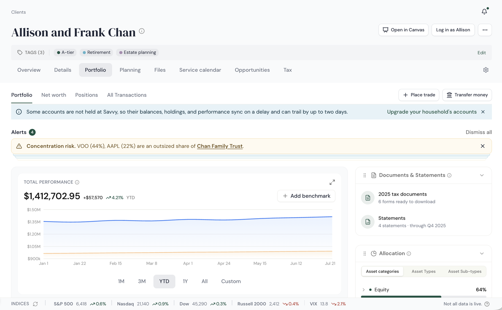
The prototype as reviewed. Place trade and Transfer money in the header on every view, a delayed-data ribbon for households with accounts held elsewhere, and a risk-alert deck before the advisor scrolls.
What the exec review changed, and where I held my ground
What the exec review changed
Every Wednesday for a month I brought the running prototype to our founder Ritik, our Director of Product, and our COO, to work through the design as it evolved and what it meant for operational workflows. The biggest debate, across three of those sessions, was accounts that hadn't moved to ECI yet. The business wanted them repapered quickly and pushed for the page to make the upgrade case as hard as possible. Out of that I gave the upgrade nudge a real home: an "Upgrade custodian for live data" note on every held-elsewhere row and a button at the end of the group.
What I pushed back on
The one thing I held my ground on was volume. The ask was a loud upgrade prompt: banners, badges, a promo on every held-elsewhere account. I pushed back. Our highest-value advisors and advisor groups hold the most accounts at other custodians, so they would see that promo on every row of every household, every day. That exhausts the people we most need to keep.
Instead I made the difference felt rather than announced. A quiet "Delayed data" banner and subtle warning marks sit exactly where a number may be stale, so the cost of staying put shows up in the data itself. And ECI and non-ECI accounts got genuinely different experiences for the same task, like editing beneficiaries: in place for an account held at Savvy, an Ops task for one held elsewhere. The bet was that advisors would upgrade from their own experience of the gap, not because we shouted at them.
The same Edit beneficiaries control on two accounts in one household. Held at Savvy opens a modal and saves immediately; held elsewhere routes to an Ops task. The upgrade case is made by the experience, not a banner.
Shipped in July, and the advisors followed
A walk through the shipped experience — the Chan household from landing page to account detail, on live data.
ECI launched
Savvy goes live as an introducing broker-dealer clearing through Fidelity NFS. First accounts open on the new custody.
Portfolio redesign launched
The single Portfolio page replaces Net worth, Managed investments, and Strategy for every household on the platform.
My influence on product-wide financial infrastructure
Owning financial infrastructure
As I mapped the data required for ECI, I began working further upstream, with the Advisor Experience pods, to define what data we needed to store, how it should be structured, and which sources should be authoritative so that we could reliably surface it across the product. That work expanded my role beyond this initiative, and I became the design lead for Financial Infrastructure: the underlying systems and data models that power household-, client-, and account-level experiences across Savvy.
The portfolio page was the first surface built on it. Once the custody-and-model rules were working there, the same rules had to hold everywhere account data appears, and I supported three engineering pods implementing them in parallel across the product: ECI for the back end, Advisor Experience for the front end, and System of Records for tasks.
Fixing the data, not just the display
Designing around existing data points exposed where the back end stored account and household data in ways the front end could not surface accurately. I influenced what is stored and how, so that live custody status, model status and account relationships are reliable at the source rather than patched per screen. That work drove the redesign of the general household data page and raised data integrity across the product as a whole.
A spec that agents can build from
I wrote the ECI content, logic and rules into a markdown file that lives in our sandbox and in the repo. Every engineer and every coding agent working on financial infrastructure builds from the same source of truth, which is what let three teams move in parallel without diverging.